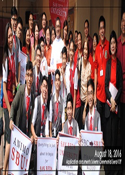
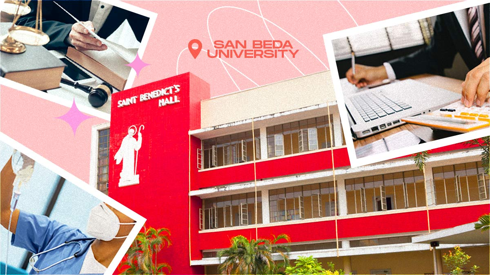

- First Place - Paper Presentation (Technology, Engineering and Sciences Category, 3rd International and Annual Convention - Philippine Association of Extension Program Implementers (PAEPI-Global), Bahay Kalinaw University of the Philippines Diliman, Quezon City)

- Outstanding Organization Moderator, Gabi ng Parangal San Beda College of Arts and Sciences March 2013
- Featured in PCWorld Philippines Campus Edition Volume 1 Number 1 2012 in the section "People Power" in an article entitled "Linking the Digital Divide" on page 27
- Top Ten Faculty Members on Student Evaluation (ranked 9th) -- San Beda College SY 2010-2011

- Teaching Excellence Award -- Far Eastern University - East Asia College, First Semester SY 2008-2009 February 21, 2009
- Professor Bibbo Students' Choice Award - February 14, 2005 - San Beda College Student Council
- Most Bibong Prof - Prof Ko 'To Students' Choice Award - February 12, 2004 - San Beda College Student Council
- Top Ten Faculty Members on Student Evaluation (ranked 4th) -- San Beda College SY 1996-1997 - Oct 24, 1997

- Silver Medalist - Oratorical Contest - 1st Year High School Level, National Teachers College, October 1982
- PD 451 Scholar June 1985